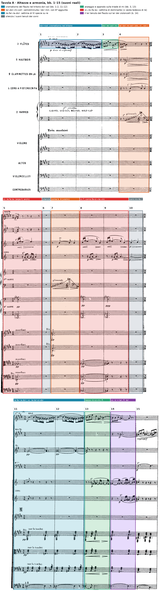
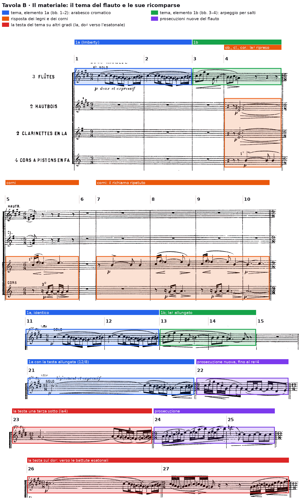

Il Prélude à l’après-midi d’un faune (1894), bb. 1–30: il tritono del flauto, il semidiminuito che scivola sulla settima di dominante, la stessa melodia sopra armonie diverse.
…si può dire con fondatezza che la musica moderna si sveglia nell’Après-midi d’un faune.
P. Boulez, citato in E. Surian, Manuale di storia della musica, vol. IV, p. 50
B4Oltre la tonalità, pp. 238–266
La triade con sesta aggiunta e la doppia cifratura di Piston (p. 58); la sesta tedesca come equivalente enarmonico della settima di dominante (lezione B11, p. 220); il sistema esatonale (lezione B19, p. 248), verso il quale l’inizio del Prélude conduce dalla b. 26.
Debussy compose il Prélude fra il 1892 e il 1894; la prima esecuzione, il 22 dicembre 1894 alla Société nationale, ebbe un successo tale che il brano fu bissato (Salvetti, La nascita del Novecento, p. 56; Belisario, Pratica di analisi musicale, p. 111). Il riferimento letterario è l’egloga L’après-midi d’un faune di Stéphane Mallarmé, di cui Debussy frequentava i «martedì» (Galli, Storia della musica 3, p. 221; Surian, p. 39).
Il Prélude comincia senza introduzione e senza accompagnamento: per tre battute e mezzo suona soltanto il primo flauto, nel registro grave, p doux et expressif. Nelle trenta battute qui esaminate quella melodia ritorna quattro volte, sempre riconoscibile dalla sua testa e sempre con un'armonia, un'orchestrazione e una prosecuzione diverse. La pagina si regge dunque su un principio che non è lo sviluppo motivico della tradizione sinfonica, ma la reinterpretazione di un oggetto fisso. Due dati armonici governano l'inizio. Il tema è costruito dentro il tritono do♯5–sol4, che la discesa cromatica attraversa e la risalita per toni interi richiude; il primo accordo del brano (b. 4), un accordo semidiminuito la♯–do♯–mi–sol♯, scivola sulla settima di dominante si♭–re–fa–la♭ (b. 5) muovendo due sole voci di semitono, e la stessa coppia di accordi ritorna alle bb. 7–9 senza risolvere. L'armatura di quattro diesis indica mi maggiore, ma il mi non compare al basso prima della b. 13: la tonalità è un orizzonte di riferimento più che un fatto.
Claude Debussy, Prélude à l’après-midi d’un faune, per orchestra (3 flauti, 2 oboi, corno inglese, 2 clarinetti in la, 2 fagotti, 4 corni in fa, 2 arpe, cimbali antichi, archi); partitura d’orchestra nella scansione IMSLP n. 14736; Très modéré, 9/8. La lezione riguarda le bb. 1–30, cioè la parte che precede il numero di chiamata 3 (b. 31). L’edizione non numera le battute: sono state contate sistema per sistema due volte, con il controllo dei numeri di chiamata 1 (b. 11), 2 (b. 21) e 3 (b. 31) e delle battute citate nella letteratura (il glissando d’arpa alle bb. 4 e 7, la pausa generale della b. 6, la ripresa del tema alle bb. 11, 21, 23 e 26). Le altezze sono suoni reali, con do4 = do centrale: i clarinetti in la suonano una terza minore sotto lo scritto, i corni in fa una quinta giusta sotto, i contrabbassi un’ottava sotto.
Le battute non sono numerate: prima dell’ascolto si numerano fino al numero di chiamata 3 (b. 31). Durante l’ascolto si segnano: ogni ritorno della testa del tema (battuta, strumento, nota di partenza); la battuta in cui tutta l’orchestra tace; il primo forte.
La testa del tema torna al flauto alla b. 11 (n. 1, identica, sul do♯5), alla b. 21 (n. 2, allungata, in 12/8), alla b. 23 (una terza sotto, sul la4) e alla b. 26 (di nuovo sul do♯5); alla b. 31 passa al clarinetto, sul sol4. L’orchestra tace alla b. 6. Il primo forte è alla b. 19, seguito da dim. et retenu alla b. 20.
La prima battuta tiene a lungo il do♯5 (una semiminima puntata legata a una croma e a una semicroma) e poi scende per grado: si4, la♯4, la♮4, sol♯4 (una terzina di semicrome per i tre suoni centrali), sol♮4. Dal sol la linea risale per toni interi, la4–si4, e chiude con il si♯4, sensibile del do♯ da cui la b. 2 riparte identica. Natoli descrive esattamente questa distribuzione: il cromatismo occupa la parte centrale del profilo, l'andamento per toni interi le due estremità, «fatta eccezione per il Si diesis che conclude la battuta» (Percorsi di analisi musicale, p. 309). L'ambito della figura è la quarta eccedente do♯–sol, che Belisario indica come la cornice dell'intera «melopea» (Pratica di analisi musicale, p. 112) e che Imberty considera la struttura tritonica da cui dipende la trama armonica di tutto il pezzo («Émergence du temps et du sens chez Mallarmé et Debussy», Rivista di Analisi e Teoria Musicale, 2012/1, pp. 16–17). Nessuna nota del tema, presa isolatamente, decide una tonalità: dei suoni della triade di mi la melodia tocca il mi, il sol♯ e il si soltanto alla b. 3.
La b. 3 cambia natura alla figura. Il flauto sale per salti, do♯5–re♯5–sol♯5 in crome, ridiscende al mi5 (semiminima), poi al sol♯4 e al si4 (semiminima puntata legata alla battuta seguente); alla b. 4 completa la frase con si4–si4–do♯5 e la chiude sul la♯4. Il la♯ è il punto in cui entra l'armonia. Sul secondo movimento della b. 4 gli oboi attaccano la♯4 e mi4, i clarinetti sol♯4 e do♯4 (suoni reali), p, in valori di minima puntata; il primo corno ribatte il mi4 con un accento, mentre la prima arpa sale in glissando. L'aggregato la♯–do♯–mi–sol♯ ammette due letture. Come accordo di settima è un semidiminuito sul la♯, cioè una settima di seconda specie con la quinta diminuita, la stessa specie dell'accordo con cui si apre il Tristan; Galli lo chiama «accordo del fauno» e lo accosta esplicitamente a quello wagneriano, osservando che la risoluzione è diversa (Storia della musica 3, p. 223). Come accordo del sesto grado di mi, invece, è una triade di do♯ minore con la sesta aggiunta la♯, che Natoli preferisce perché permette di rileggere anche il do♯ iniziale del flauto come sesta aggiunta di una triade di mi sottintesa (p. 312). Il manuale della classe definisce la triade con sesta aggiunta come un accordo in cui «la fondamentale della triade è posta in particolare rilievo» rispetto a quella della settima, e riporta la doppia cifratura di Piston (D'Urso, Bertolini, Il linguaggio della musica, 5° anno, p. 58). La partitura non sceglie fra le due interpretazioni: il basso tace, e il la♯ è affidato alla voce più acuta.
Alla b. 5 (6/8) la seconda arpa e gli archi con sordina, pp, tengono si♭1–fa2–si♭2–re3–la♭3–si♭3: una settima di dominante sul si♭, in stato fondamentale, raddoppiata in tre ottave. Il passaggio dalla b. 4 alla b. 5 è il dato armonico più caratteristico dell'inizio. Il la♯ diventa si♭ e il sol♯ diventa la♭ per enarmonia, mentre il do♯ sale al re e il mi al fa: due voci restano ferme, due salgono di semitono. Tymoczko descrive appunto questa successione come una variante del modello del Tristan, in cui un semidiminuito scivola cromaticamente su una settima di dominante, e mostra che Debussy ne conserva lo schema di condotta delle parti senza citarne gli accordi (A Geometry of Music, pp. 47–48). Il si♭7 non risolve sul mi♭: alla b. 6 l'intera orchestra tace per una battuta, alla b. 7 i violini divisi ripresentano l'accordo della b. 4 (la♯4–mi4, sol♯4–do♯4) e alle bb. 8–9 la seconda arpa e gli archi ripropongono il si♭7, pp e poi ppp. Tymoczko include le bb. 6–9 fra gli esempi di condotta delle parti economica fra semidiminuiti e settime di dominante nel Prélude (p. 317). Natoli propone per il si♭7 una lettura enarmonica ulteriore: pensato come la♭ = sol♯, l'accordo è una sesta tedesca di re, e ciò spiegherebbe l'accordo della b. 11 (p. 313). Il manuale della classe ricorda che sesta tedesca e settima di dominante hanno la stessa struttura e la stessa sonorità e si distinguono soltanto per la funzione e la condotta delle parti (D'Urso, Bertolini, lezione 11, p. 220). È appunto la funzione a mancare: fra la b. 9 e la b. 11 si interpone la b. 10, in cui i corni tengono mi4–fa4 e re4, e il si♭7 non conduce né alla sua tonica né al la di una cadenza in re.
Nelle trenta battute iniziali non c'è una cadenza perfetta che confermi il mi. Le articolazioni sono date da accordi sospesi e da silenzi: la settima di dominante delle bb. 5 e 8–9 non risolve, la b. 6 è una pausa generale, e il ritorno del tema alla b. 11 avviene dopo una battuta di soli corni. Si può parlare di cadenze evitate nel senso più letterale, cioè di dominanti che non raggiungono la tonica. Piston sceglie l'inizio del Prélude come esempio di una composizione in cui la tonalità classica è sostituita da «una centralità non classica (in questo caso, privata del senso di dominante)» (Armonia, pp. 514–515): l'espressione descrive con precisione l'effetto delle bb. 1–14.
Sul passo trascritto, scrivere le quattro note dell’accordo della b. 4 e quelle dell’accordo della b. 5, nello stesso ordine. Quali restano ferme, quali si muovono, e di quanto? Come si chiamano i due accordi?
B. 4: la♯–do♯–mi–sol♯; b. 5: si♭–re–fa–la♭. Restano ferme, per enarmonia, la♯ = si♭ e sol♯ = la♭; salgono di semitono do♯→re e mi→fa. Il primo è un accordo semidiminuito sul la♯ (settima di seconda specie con la quinta diminuita), che si può leggere anche come triade di do♯ minore con sesta aggiunta; il secondo è una settima di dominante sul si♭, che non risolve: alla b. 6 l’orchestra tace.

Alla b. 11 (numero 1) il tema ritorna identico, sopra un accordo di re maggiore degli archi divisi in tremolo sur la touche, pp: re2 nei contrabbassi, la2 nei violoncelli, fa♯3 nelle viole, re4–fa♯4 nei violini secondi. Con il do♯5 tenuto dal flauto l'aggregato è re–fa♯–la–do♯, cioè una settima di quarta specie (settima maggiore) sul re. Nella seconda metà della battuta viole e violini secondi abbassano il fa♯ a fa♮, mentre i violoncelli salgono per semitoni, la2–la♯2–si2–do♮3. Sul terzo movimento, con il sol♮4 del flauto, si sentono insieme re (contrabbassi), si (violoncelli), fa♮ (viole e violini) e sol♮: le note di una settima di dominante di do in secondo rivolto, alla quale l'ultima croma dei violoncelli (do♮3) e il si♯4 del flauto sembrano dare una risoluzione momentanea. La lettura è da prendere con prudenza, perché i violoncelli divisi aggiungono note in tremolo non considerate qui e la b. 12 ripete la b. 11 senza alcuna conseguenza tonale; resta il fatto che il cromatismo melodico del tema è ora raddoppiato da un cromatismo del basso in moto contrario.
Il mi compare al basso per la prima volta alla b. 13, quando i contrabbassi suonano mi2–si1–mi2 sotto l'arpeggio del flauto, che è identico a quello della b. 3; Natoli segnala in queste battute il «primo riferimento esplicito alla triade di Mi» (p. 312). Alla b. 14 il flauto tiene il la♯4 più a lungo che alla b. 4 (semiminima puntata legata a una croma) e i violoncelli scendono dal si2 al la♯2: il tema si chiude, ancora una volta, sul suono che lo apre all'ambiguità. La sola successione di quinta al basso, si1–mi2 alla b. 13, è un'inflessione di quattro movimenti che il flauto non asseconda; Belisario riconosce soltanto nel tratto successivo (dalla b. 26) una «cadenza perfetta, arricchita di 7ª e 9ª di Dom.te e con 6ª aggiunta, al tono di Si magg.» (p. 112), cioè una cadenza sulla dominante del mi, non sul mi.
Alla b. 11 la melodia è identica nota per nota alle bb. 1–2 e cambia solo la durata dell'ultimo suono alla b. 14, come osserva Galli (p. 223); la trasformazione è tutta nell'armonia (re maggiore con settima maggiore al posto del silenzio) e nella testura (gli archi in tremolo al posto del flauto solo). La stessa melodia, alle bb. 1–2 e 11–12, sta sopra il silenzio e sopra un accordo di re con settima maggiore, e cambia significato senza cambiare una nota.
Confrontare le bb. 11–12 con le bb. 1–2. Che cosa è rimasto uguale? Quale accordo forma il do♯5 del flauto con gli archi? In quale direzione si muovono i violoncelli mentre il flauto scende?
La melodia è identica nota per nota; cambiano l’armonia e la testura. Con il re2–la2–fa♯3–re4–fa♯4 degli archi il do♯5 forma re–fa♯–la–do♯, settima di quarta specie (settima maggiore) sul re. Mentre il flauto scende per semitoni, i violoncelli salgono per semitoni, la2–la♯2–si2–do♮3: moto contrario cromatico.
Imberty divide il tema in due elementi di funzione diversa (pp. 16–17). Il primo (bb. 1–2) è sinuoso, chiuso nell'ambito del tritono e fatto di un cromatismo irregolare, una sorta di preludio libero; il secondo (bb. 3–4) traccia una voluta ampia per salti, che è un'estensione decorativa del primo. La distinzione corrisponde ai dati: le bb. 1–2 usano soltanto seconde (maggiori e minori), le bb. 3–4 terze, quarte e una sesta. La ripetizione letterale della b. 1 alla b. 2 rende la frase asimmetrica, due battute di un elemento più due di un altro, e sposta il peso sull'arpeggio della b. 3, che è il solo momento in cui la melodia disegna la triade di mi. Il primo corno, alle bb. 5 e 8–9, espone una risposta di quattro note, fa4–si♭4–la♭4–mi4, che riassume l'armonia: le prime tre appartengono al si♭7, l'ultima è il mi, cioè il tritono del si♭, la nota che il corno aveva già ribattuto alla b. 4. Il richiamo dei corni alle bb. 7 e 10 (mi4, poi mi4–fa4 sopra il re4 del terzo corno) è la sola voce che lega le battute di attesa fra un accordo e l'altro.
Il materiale delle trenta battute è uno solo, il tema del flauto, accompagnato da due accordi e dalla figura dei corni che li collega. Le trasformazioni riguardano il contesto più che il tema. Alla b. 21 (numero 2, 12/8, légèrement et expressif) la testa del tema è allungata: il do♯5 dura una battuta intera, e la discesa cromatica arriva solo alla fine, preparando alla b. 22 una prosecuzione nuova, in terzine e in gruppi irregolari, che per la prima volta scende fino al re♯4. Natoli descrive questo terzo episodio come un'evoluzione in cui la prosecuzione melodica del flauto «diventa eco e respiro» e conduce a un nuovo ingresso dell'arabesco «questa volta una terza sotto» (p. 317): alla b. 23 la testa è infatti sul la4. Alla b. 26 il flauto la riprende sul do♯5, e Natoli legge il tratto delle bb. 26–37 come una transizione che porta il materiale sulla scala per toni interi, con la testa del tema presentata sul do♯ (b. 26), sul sol del clarinetto (b. 31) e sul si♭ (b. 34), a distanza di tritono e di terza (pp. 318–319); Belisario parla, dalla b. 26, di un'articolazione libera della testa del tema «sui gradi della scala esatonale» (p. 112).
Il principio è quello che Surian descrive per l'intero brano: la melodia viene ripetuta «con sottili varianti e situazioni armonico-timbriche sempre nuove», e il continuo rinnovarsi dei colori armonici e timbrici «assume un peso formale decisivo» e va «ben al di là della tecnica compositiva tardo-romantica basata sulla elaborazione e trasformazione dei motivi» (pp. 49–50). Salvetti aggiunge che a rendere «sempre nuovo» il tema concorrono «tutte le alchimie di armonizzazione che riescono a dissolvere il valore sintattico degli accordi in luci timbricamente cangianti» (La nascita del Novecento, p. 56).
L'indicazione è Très modéré per tutte le trenta battute; il metro invece cambia di continuo: 9/8 alle bb. 1–4, 6/8 alle bb. 5–10, 9/8 alle bb. 11–20, poi un'alternanza di 12/8 e 9/8 (12/8 alle bb. 21, 23, 26, 28 e 30, 9/8 alle bb. 22, 24–25, 27 e 29). Il cambio di metro non serve a irregolarizzare la pulsazione, che resta la croma, ma ad adattare la battuta alla lunghezza del materiale: il tema occupa quattro battute di 9/8, la risposta dell'orchestra battute di 6/8, il tema allungato della b. 21 una battuta di 12/8. Dentro la battuta il ritmo del tema mescola valori lunghi e gruppi rapidi, con una terzina di semicrome che contraddice la suddivisione binaria del secondo movimento; Galli parla di «articolazione ritmicamente instabile» (Storia della musica 3, p. 222), e il manuale ricorda, con Salvetti, che dietro l'apparente libertà ritmica di Debussy «si cela un calcolo "artificiale" dei rapporti tra le durate» (Galli, p. 219). Natoli osserva che il primo tutti delle bb. 11–20 ristabilisce una chiarezza metrica con l'iterazione di una figurazione ternaria, dopo la fluttuazione iniziale (p. 317).
L'orchestra del Prélude rinuncia a trombe, tromboni e timpani e aggiunge due arpe e i cimbali antichi (Galli, p. 222; Belisario, p. 115). Nelle bb. 1–10 la testura procede per blocchi che non si sovrappongono quasi mai: il flauto solo, poi i legni e il corno, poi l'arpa e gli archi, poi il silenzio, poi di nuovo violini e corni. Natoli vede in questo inizio la dissoluzione della massa orchestrale del sinfonismo tedesco attraverso l'eliminazione dei raddoppi timbrici usuali, fino al «suono puro» del flauto solo (p. 307), e Surian definisce il tema un arabesco che «si presenta senza accompagnamento, come sospeso nello spazio» (Manuale di storia della musica, vol. IV, p. 49). Alla b. 11 cambia il principio: gli archi, divisi e in tremolo sulla tastiera, formano uno strato continuo sotto il tema, e il tremolo, la divisione e la sordina (tolta solo alla b. 30, ôtez vite les sourdines) fanno dell'armonia un colore più che una successione. Galli richiama la divisione interna di oboi, clarinetti e archi alle bb. 4–9, che «radicalizza l'individualità timbrica all'interno del gruppo omogeneo», il glissando della prima arpa alle bb. 4 e 7, la sordina degli archi e la pausa della b. 6 (p. 222). Alla b. 21 la prima arpa accompagna il tema con arpeggi rapidi in gruppi irregolari, e il secondo e il quarto corno tengono un pedale grave pp.
Le dinamiche restano fra ppp (b. 9) e p per quindici battute; la sola linea con forcelle è quella del flauto e dei corni. Dalla b. 15 gli archi crescono (cre-scen-do alle bb. 16–18) fino al f della b. 19, primo forte del brano, che Galli descrive come «un apice che tuttavia non risolve ma si estingue» (p. 223): alla b. 20 è scritto dim. et retenu, e il tema della b. 21 riparte p. Alla b. 31 il clarinetto attacca f e i corni con sordina sfz: è il segnale del cambio di sezione.

Le trenta battute si dividono in tre episodi, ciascuno aperto dal tema, secondo la scansione proposta da Natoli (p. 317) e confermata da Belisario, che vede il tema tornare «due volte (N. 1 e 2), con due distinte elaborazioni» nell'arco di venticinque battute (p. 112). I numeri di chiamata coincidono con l'inizio degli episodi.
| Sezione | Battute | N. batt. | Materiale | Centro / armonia | Indicazioni |
|---|---|---|---|---|---|
| Episodio 1, tema | 1–4 | 4 | tema del flauto: elemento 1a (bb. 1–2), 1b (bb. 3–4) | tritono do♯–sol; nessun basso | 9/8, Très modéré, p doux et expressif |
| Episodio 1, risposta | 4–10 | 6½ | accordo di legni e violini, figura del corno, glissando d'arpa | la♯–do♯–mi–sol♯ ↔ si♭–re–fa–la♭; pausa generale (b. 6) | 6/8 dalla b. 5; pp, ppp |
| Episodio 2 | 11–14 | 4 | tema identico; archi divisi in tremolo | re–fa♯–la–do♯; vc. la–la♯–si–do; basso mi (b. 13) | n. 1, 9/8, sur la touche, pp |
| Episodio 2, crescendo | 15–20 | 6 | accumulo degli archi e dei legni | apice sospeso (b. 19) | cresc., f (b. 19), dim. et retenu (b. 20) |
| Episodio 3 | 21–25 | 5 | tema allungato, prosecuzione nuova (b. 22), testa sul la (b. 23) | arpeggi della I arpa; pedale dei corni | n. 2, 12/8–9/8, légèrement et expressif, p |
| Transizione | 26–30 | 5 | testa del tema sul do♯ (b. 26), linee discendenti degli archi | verso la scala per toni interi (Natoli, Belisario) | 12/8–9/8; ôtez vite les sourdines (b. 30) |
| (Inizio della sezione seguente) | 31 → | — | testa del tema sul sol del clarinetto | esatonale dalla b. 32 | n. 3, f |
Le proporzioni dicono qualcosa della forma intera. Ogni episodio è più lungo del precedente quanto a elaborazione, non quanto a battute: il primo alterna il tema e il silenzio, il secondo lo sovrappone a uno strato continuo e lo porta a un primo forte, il terzo lo prolunga fino a sostituire la seconda metà con una prosecuzione nuova. Natoli usa per questa crescita l'immagine della sinusoide, in cui la ripetizione della prima idea scandisce l'incedere degli eventi e ogni episodio vive «in un respiro di scrittura e di orchestrazione sempre più ampio ed articolato» (pp. 309, 318). Sulla forma complessiva le fonti divergono nei confini ma concordano nella sostanza: Surian individua tre zone con un episodio centrale alle bb. 55–75 (p. 49), Natoli uno schema A–B–A′ con la sezione B dalla b. 55 (p. 309), Belisario tre parti con limiti ai numeri 3 e 7 (p. 111), Salvetti uno schema A–B–A′ in cui B contiene il grande tema cantabile in re♭ e A′ ripete il tema del flauto «per un numero di volte che diresti infinito» (p. 56). In questo quadro le bb. 1–30 sono l'esposizione della sezione A, ma un'esposizione che contiene già il principio dell'intero brano: il ritorno variato della stessa idea.
Nella nota di programma che Galli riporta, Debussy scrive che la musica è «una illustrazione libera del bel poema» e che «non pretende affatto di sintetizzarlo», ma presenta «i successivi scenari attraverso i quali si muovono i desideri e i sogni del fauno nella calura del pomeriggio» (Generi, forme, stili musicali, UdA 10 «Il poema sinfonico», p. 143); Salvetti precisa che non è dato sapere fino a che punto la musica sia costruita sulle articolazioni della poesia (p. 55). La lettera di Mallarmé a Debussy, in cui il poeta scrive che la musica non presenta «dissonanza alcuna con il mio testo, se non nell'andare molto più lontano», è citata da Salvetti (p. 56).
La posizione storica del brano è stata fissata da Boulez, che Surian cita: la musica moderna «si sveglia nell'Après-midi d'un faune» (p. 50). L'analisi delle bb. 1–30 permette di dire in che senso. Il materiale armonico dell'inizio non è nuovo: il semidiminuito, la settima di dominante, la sesta tedesca, la settima maggiore, il cromatismo melodico appartengono alla tradizione tardo-romantica, e il rapporto con il Tristan è dichiarato dalla specie stessa del primo accordo. Nuovo è il loro uso. Gli accordi sono collegati per condotta delle parti (due semitoni fra b. 4 e b. 5) e non per funzione, si ripetono invece di risolvere, si alternano con il silenzio; la tonalità di mi resta nell'armatura e nel ricordo della triade disegnata dal flauto, ma non è mai confermata da una cadenza. Galli riassume la situazione osservando che, «malgrado si possano rintracciare dei riferimenti alla tonalità di MI maggiore, la scrittura di Debussy defunzionalizza le relazioni accordali» (p. 222); Natoli parla di una tonalità che è «uno dei possibili strumenti di cui disporre», capace di «respirare con gamme e modi» (p. 310); Salvetti di un tema che «abbina cromatismo, scala esatonale e modalità» (p. 56). La partitura conferma il cromatismo e, dalle bb. 26–32, la scala per toni interi; la modalità, nelle trenta battute iniziali, è più un'ipotesi delle fonti che un dato verificabile.
Sul piano delle altezze l'inizio del Prélude si regge su un tritono melodico (do♯–sol) e su una coppia di accordi, semidiminuito e settima di dominante, collegati da due semitoni e lasciati senza risoluzione; il mi dell'armatura arriva al basso solo alla b. 13 e non è mai confermato da una cadenza. Il materiale si riduce a un tema e alla sua risposta, e la trasformazione riguarda l'armonia, l'orchestrazione e la prosecuzione, non la melodia, che alle bb. 11–12 ritorna identica sopra un accordo nuovo. La forma procede per episodi aperti dal tema, ciascuno più ampio del precedente nell'elaborazione, fino alla transizione verso la scala per toni interi. Le fonti storiche permettono di collocare questi dati in una poetica dell'evocazione e della variazione di colore; la partitura non dice nulla di un programma narrativo, e l'analisi può affermare soltanto ciò che si legge: che il significato del tema dipende ogni volta da ciò che gli sta sotto.
Fonti: C. Debussy, Prélude à l’après-midi d’un faune, partitura d’orchestra, scansione IMSLP n. 14736, pp. 1–8; E. C. Natoli, Percorsi di analisi musicale, Volontè & Co., Milano 2021, lezione 16, pp. 307–323; A. Belisario, Pratica di analisi musicale, pp. 111–115; M. Imberty, «Émergence du temps et du sens chez Mallarmé et Debussy», Rivista di Analisi e Teoria Musicale (GATM), 2012/1, pp. 16–17; D. Tymoczko, A Geometry of Music, Oxford University Press 2011, pp. 47–48, 317–318; W. Piston, Armonia, cap. 32, pp. 514–515; D. D’Urso, C. Bertolini, Il linguaggio della musica, 5° anno, Mondadori Education 2022, p. 58 e lezione 11, p. 220; C. Galli, Storia della musica 3, pp. 219–223; C. Galli, Generi, forme, stili musicali, p. 143; E. Surian, Manuale di storia della musica, vol. IV, pp. 39, 48–50; G. Salvetti, Storia della musica, vol. 10, La nascita del Novecento, pp. 55–56.
Otto battute in 6/8 per pianoforte, su due righi, sul modello delle bb. 4–10.
1. La mano sinistra tiene in ogni battuta, in minime puntate, uno dei due accordi: A = la♯2–mi3–sol♯3–do♯4, B = si♭2–fa3–la♭3–re4. Ordine: A B A B A, pausa, B A. Fra A e B restano ferme (per enarmonia) le due voci la♯/si♭ e sol♯/la♭; le altre due si muovono di semitono.
2. La b. 6 è una pausa generale, come la b. 6 del Prélude.
3. La mano destra usa soltanto suoni dell’accordo della battuta, più al massimo due note di volta in tutto l’esercizio; in almeno due battute ha la figura del corno delle bb. 5 e 8: due semicrome, poi una nota legata.
Controllo prima di consegnare: ogni battuta somma tre semiminime; fra A e B si muovono soltanto do♯→re e mi→fa (e ritorno); l’ultima battuta è sull’accordo A, senza risoluzione.
Al pianoforte: uno tiene gli accordi, l’altro suona la mano destra del compagno. Poi si confronta il proprio lavoro con la soluzione, verificando battuta per battuta quali voci si muovono fra A e B.
Il tema scende per semitoni dentro il tritono do♯–sol e risale per toni interi. Il semidiminuito la♯–do♯–mi–sol♯ (b. 4) scivola sulla settima di dominante si♭–re–fa–la♭ (b. 5) con due voci ferme per enarmonia e due che salgono di semitono, e nessuno dei due accordi risolve; il mi arriva al basso solo alla b. 13.
Un solo tema, che ritorna alle bb. 11, 21, 23 e 26 sopra armonie e strumenti diversi: alle bb. 11–12 identico, sopra re–fa♯–la–do♯. Tre episodi aperti dal tema (bb. 1, 11, 21), poi la transizione verso la scala per toni interi; i cambi di metro adattano la battuta al materiale.
L’analisi scritta completa delle bb. 1–30 è nei materiali della classe. La lezione si chiude con il solfeggio (parlato, cantato, ritmico) e con i compiti scritti per casa.
Il testo completo, nella forma della prova di tipo A. Si apre dopo la consegna del compito; la versione da stampare è nei materiali della classe.
Compiti per la prossima volta
Realizza il basso a quattro parti.
Sul quaderno, a matita. La foto del lavoro finito va su Classroom. Nel Workbook: apri l’esercizio 3.15 ↗
Compiti per la prossima volta
n. 140 e n. 141 parlato · n. 142 e n. 143 cantato · n. 144 e n. 145 ritmico
Ogni pezzo a tempo, senza fermarti: il parlato a nomi, il cantato prendendo il primo suono dalla tastiera, il ritmico battendo la pulsazione.
Scrivi la melodia sul quaderno, in chiave di violino: otto battute in 4/4, si♭ maggiore. Il primo suono è si♭. Prima il riferimento, poi tutto due volte, ogni coppia di battute due volte, il collegamento 1–4, 3–6 e 5–8, e tutto per controllare.
Il riferimento: accordo di tonica e primo suono
Il dettato · otto battute
Le sezioni (riferimento, tutto, le coppie, il collegamento) si ascoltano una per una e si ripetono quanto serve; le fasi fanno la procedura della classe, con gli annunci e le pause, da qualunque punto.
Sul quaderno scrivi in testa la sigla C5-D-U03-L5. Si corregge all’inizio della prossima lezione.
Compiti per la prossima volta
Scrivi un contrappunto di quinta specie (il contrappunto fiorito) sopra il canto fermo, in modo ionico (finale do): nove battute. Comincia su una consonanza perfetta, alla cadenza la sensibile sale alla finale, niente quinte e ottave consecutive.
Sul quaderno, con la sigla C5-CP-U03-L5 in testa; la foto va su Classroom.
Realizza a quattro parti il basso senza numeri: dodici battute in 4/4, si♭ maggiore. Trova tu l’accordo di ogni nota (la regola dell’ottava è il punto di partenza) e scrivilo sotto; poi il soprano, poi le voci interne. Accordi che puoi usare: tutto quello studiato, e una modulazione a un tono vicino.
Sul quaderno, con la sigla C5-BD-U03-L5 in testa; la foto va su Classroom.
Armonizza a quattro parti il canto dato: dodici battute in 4/4, sol maggiore. Prima le cadenze, poi il basso per intero, e solo alla fine contralto e tenore. Accordi che puoi usare: tutto quello studiato, e una modulazione a un tono vicino.
Sul quaderno, con la sigla C5-CD-U03-L5 in testa; la foto va su Classroom.
Scritto: Un basso di dodici battute, in 3/4 (Workbook, esercizio 3.15), sul quaderno; la foto va su Classroom. Solfeggio dal quaderno di lettura: parlato n. 140, 141; cantato n. 142, 143; ritmico n. 144, 145 (a tempo, senza fermarsi). Dettato C5-D-U03-L5 dalla pagina della lezione (sezioni da ascoltare, o le fasi della procedura guidata), sul quaderno con la sigla. Contrappunto di quinta specie sul canto fermo (C5-CP-U03-L5). Basso senza numeri da realizzare a quattro parti (C5-BD-U03-L5). Canto dato da armonizzare a quattro parti (C5-CD-U03-L5).
Il dettato di oggi
Scrivi la linea del basso sul quaderno, in chiave di basso: otto battute in 4/4, si♭ maggiore. Il primo suono è si♭. Prima il riferimento, poi tutto due volte, ogni coppia di battute due volte, il collegamento, e tutto per controllare.
Il riferimento: accordo di tonica e primo suono
Il dettato · otto battute
Le sezioni si ascoltano una per una e si ripetono quanto serve; le fasi rifanno la procedura della classe, con gli annunci e le pause, da qualunque punto. Per chi era assente, e per chi vuole rifarlo: sul quaderno scrivi in testa la sigla C5-DV-17.
In classe
A nomi, a tempo, con la mano che batte. Chi si ferma riparte dalla battuta dopo.
Apri il n. 136 nel quaderno di lettura ↗ chiave di tenore · 2/4
In classe
Si prende il tono dalla tastiera, si canta insieme; poi a gruppi.
Apri il n. 137 nel quaderno di lettura ↗ chiave di violino · 3/4 · re maggiore
Apri il n. 138 nel quaderno di lettura ↗ chiave di violino · 4/4 · fa maggiore
In classe
Tutti insieme, battendo la pulsazione. Poi a file, due battute a testa.